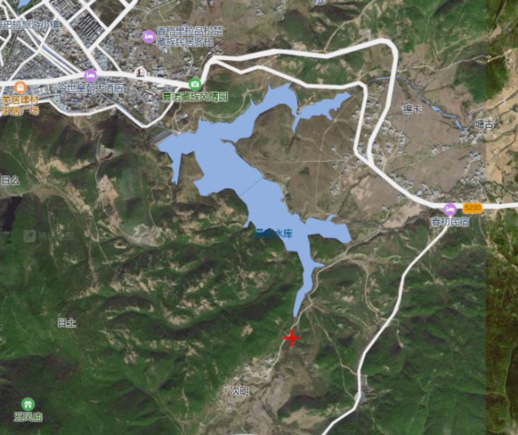
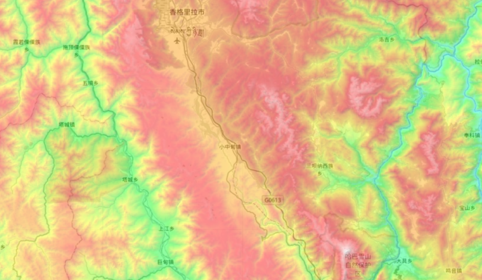

2 设计总则
2.1 选址及自然条件
2.1.1 地理位置与区位条件
本世界选址位于小中甸镇，隶属云南省迪庆藏族自治州香格里拉市，地处青藏高原东南缘与横断山区过渡地带。
地理坐标：
| 指标 | 数值 |
|---|---|
| 纬度 | 27.801667°N |
| 经度 | 99.755000°E |
| 海拔范围 | 3,200–3,500 m |
该区域位于滇、川、藏三大地理与文化板块的交汇地带，地质构造稳定、历史气象数据完整，是一个长期可预测、可工程化管理的高原地区。
1
2.1.2 地形地貌与空间组织潜力
选址区域整体呈现为高原坝区 + 周边山地环抱的复合地貌，其空间结构具有显著的工程与规划优势：
| 地形单元 | 特征 | 设计意义 |
|---|---|---|
| 高原坝区 | 地势平坦、连续 | 适合高密度、模块化、连续建设 |
| 周边山体 | 起伏明显、边界清晰 | 构成天然世界边界与生态缓冲 |
| 河谷与垭口 | 方向性明确 | 形成交通、风能、水能廊道 |
从空间规划角度看，该地形天然支持：
集中式发展（避免无序蔓延）
立体复合布局（垂直叠加功能）
清晰的核心—功能—生态层级结构
2.1.3 气候条件与能源环境基础
2
小中甸地区属于典型高原季风气候，其长期统计特征如下：
1. 气候参数
| 指标 | 数值区间 |
|---|---|
| 年均气温 | 5–6 ℃ |
| 夏季平均最高气温 | 20–22 ℃ |
| 冬季平均最低气温 | 0 ℃以下 |
| 昼夜温差 | 20–30 ℃ |
| 年日照时数 | 2,400–2,800 h |
| 年平均降水量 | ≈ 600–650 mm |
2. 气候对世界运行的意义
稳定而充足的日照：为光伏与建筑一体化能源系统提供可靠基础
显著昼夜温差：有利于被动式建筑热调节与储能调峰
明确季节性降水：适合构建水资源调蓄与循环利用系统

该气候条件在本世界中被用于支持真菌培养微环境控制、被动式建筑热工设计以及水能系统的稳定运行。
2.1.4 水文与环境基础条件
区域水文系统完整，上游水源稳定，具备：
居民生活与生产用水保障条件
小型水能与调蓄工程的现实基础
污水处理与再生回用的工程可行性
在本世界中，自然环境被视为一个持续运行、可量化管理的系统组成部分，其状态直接影响能源调度、空间布局与人群生活质量。区域主要水源类型为高山冰川融水与季节性径流，水质背景适合用于无菌科研与循环系统。
2.2 人群概述
2.2.1 总人数及性别比例
1. 总体人口规模
| 指标 | 数值 |
|---|---|
| 当前常住人口 | 1,807 人 |
| 规划可承载上限 | 3,614 人 |
该人口规模是在能源供给能力、空间组织效率、公共服务承载力与社会系统复杂度之间形成的稳定运行态结果。
2. 性别比例
| 指标 | 数值 |
|---|---|
| 男性 : 女性 | 1.15 : 1 |
该比例源于世界建设与运行初期的人员结构与岗位分布，并非制度性设定。
在长期运行与代际更替过程中，性别结构具备自然调节与优化空间。
2.2.2 年龄结构
| 年龄段 | 占比 | 人数 |
|---|---|---|
| 0–18 岁 | 23.63% | 427 |
| 18–55 岁 | 65.02% | 1,175 |
| 55 岁以上 | 11.34% | 205 |
该结构具有以下系统意义：
主体人群处于高生产与高认知能力阶段
教育体系具备完整代际连续性
医疗与社会保障负担保持在可控区间
2.2.3 人均能耗
本节用于明确世界运行中人口规模、能源系统与社会复杂度之间的定量约束关系，是设计总则层面的核心工程指标之一。
1. 人均综合能耗的定义
在本世界的设计与阶段性运行核算中，人均综合能耗定义为：
在既定技术条件与运行模式下，为维持居民日常生活、公共服务、生产活动、信息系统及世界基础设施稳定运行，平均每名常住居民一年所对应的终端能源消耗总量。
该指标采用综合口径，不区分能源形式，统一折算为电能等效值，用于系统级规划与约束。
2. 人均综合能耗数值
依据项目能源核算与运行设定，本世界当前阶段的人均综合能耗为：
| 指标 | 数值 |
|---|---|
| 人均综合能耗 | 11,900 kWh/人·年 |
| 折合日均能耗 | ≈ 32.6 kWh/人·日 |
| 适用人口规模 | 1,807 人 |
该数值为设计与运行统一采用的基准指标，用于反向约束人口规模、功能配置与能源系统容量。后期人口翻倍，人均能耗保持不变或略微下降，在中微子能量立方的加持下，生产总能量将与之剧增，多余部分将利用原子级复制机提供的材料进行储存（详见外交部分）。
3. 人均能耗的构成说明
在设计总则层面，人均能耗不追求对所有子系统进行极端细分，而是按照世界运行功能模块进行归类说明：
| 功能模块 | 说明 |
|---|---|
| 居住与日常生活 | 包括居住空间照明、热调节、基本生活设备等 |
| 公共与服务设施 | 医疗、教育、公共空间、管理与服务系统 |
| 生产与保障系统 | 农业、基础制造、维护与物资保障 |
| 信息与计算系统 | 通信、数据处理、控制与管理平台 |
| 基础设施与系统冗余 | 能源调度、储能损耗、水处理、交通与安全冗余 |
注：
各模块具体能耗占比已在对应板块中进行核算；
“设计总则”仅给出汇总级指标，不在此重复展开细节计算。
4. 人均能耗与人口规模的线性关系
在当前设计阶段，人均综合能耗被视为相对稳定的系统参数，人口规模与世界年总能耗之间呈线性关系：
\[\mathbf{E}_{\text{total}}\mathbf{= N \times 11,900}\text{ kWh}\]
其中：
\(N\)为常住人口规模
\(E_{\text{total}}\)为世界年终端能源需求总量
据此可得到当前与规划阶段的能耗需求量级：
| 人口规模 | 年终端能耗需求 |
|---|---|
| 1,807 人（当前） | ≈ 21.5 GWh/年 |
| 3,614 人（未来） | ≈ 43.0 GWh/年 |
该关系被作为世界运行中的硬性工程约束条件。
5. 人均能耗指标的角色
在本世界的设计总则中，人均综合能耗具有以下定位：
不是统计结果，而是设计前提
不是生活水平指标，而是系统运行指标
不是对外比较工具，而是内部约束参数
据此形成明确原则：
人口规模、功能扩展与社会复杂度的提升，
必须始终在既定人均能耗与能源系统承载能力的约束下进行。
这一原则保证了世界在长期运行中不会因规模扩张或功能叠加而破坏系统整体稳定性。
2.2.4 遴选标准
人群构成的多维评价模型
人群构成并非随机聚合，而是基于世界长期运行需求形成的多维综合能力模型：
1. 生理与健康适应性
长期高原环境适应能力
稳定的身体机能与健康水平
2. 专业与知识结构
覆盖能源、工程、建筑、农业、医疗、科技、教育、治理等关键领域
强调跨学科协作能力
3. 社会协作与心理稳定性
适应高度系统化社会结构
具备长期协作与共同体意识
4. 价值共识与长期适配性
理解并认同世界整体运行逻辑
接受资源、空间与能耗受限条件下的生活方式
该遴选模型用于维持人群能力结构与世界系统复杂度之间的长期匹配。
2.3 设计理念
2.3.1 总体设计立场
本设计总则并非抽象构想，而是对一个已经形成明确技术体系与空间结构的世界进行系统性总结。
其核心目标是：在有限空间内，构建一个 能源自给、技术可行、环境可管理、人群可长期居住 的完整世界系统。
2.3.2 能源—科技—环境—人群的整体协同
世界运行建立在以下共识之上：
能源：提供一切系统运行的物理基础
科技：提升能源效率、系统可靠性与管理精度
环境：作为资源来源与承载介质被持续管理
人群：既是系统服务对象，也是系统运行主体
四者形成高度耦合的整体结构，任何单一要素的变化都会反馈至整体系统。
2.3.3 能源系统的基础定位
能源体系强调：
长期稳定性
冗余与安全边界
可预测、可调度的运行特征
能源供给能力直接限定人口规模、技术复杂度与生活生产强度。
2.3.4 科技应用原则
科技体系遵循以下原则：
技术来源真实，可在现实或实验室中验证
系统路径清晰，运行逻辑可解释
能耗、维护与风险可评估
不依赖未来假设作为前提
科技的作用是降低单位资源消耗、提高整体运行效率。
2.3.5 空间秩序与环境管理
空间设计强调：
功能清晰、层级明确
资源流动路径可追踪
对外部环境影响可评估
环境并非背景，而是被纳入统一管理体系的重要组成部分。
2.3.6 人群与长期可居住性
所有设计最终指向一个核心目标：
长期可居住性。
即：
稳定而可预期的生活条件
清晰的社会结构与公共空间秩序
可持续的能源与资源供给
具备延续性的教育、文化与知识体系